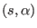

Next:
Cylindrical tokamak
Up:
Notes on tokamak equilibrium
Previous:
Grad-Shafranov equation with prescribed
Misc contents
Subsections
Cylindrical tokamak

parameters
Toroidal magnetic field of EAST tokamak
Comparison of EAST with DIII-D tokamak
Miller's formula for shaped flux surfaces
Double transport barriers pressure profile
Ballooning transformation
Discussion about the poloidal current function, check!
tmp check!
Radial coordinate to be deleted
yj 2018-03-09